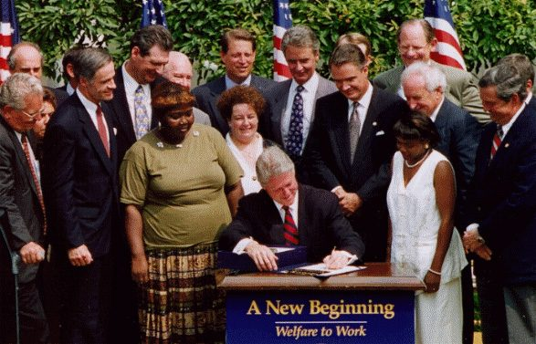
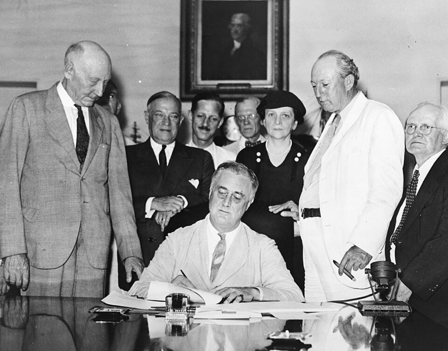

这一页在做什么
第 11 章讲公司里的试验，这一章转到政府：半个世纪来，社会科学家怎样用抽签分组检验福利、培训、警务这些公共项目。这一页先讲一场方法之争：不做试验、靠统计模型，能不能估准一个项目的效果？再走进两个领域：犯罪（家暴报警时要不要一律逮捕）和福利（领救济要不要先去工作）。读的时候抓两条线：一次试验和多次复现差在哪；作者为什么一个领域看成失败、一个看成成功。

1996 年 8 月，克林顿签署福利改革法，讲台上写着「新的开始：从福利到工作」（图片说明误写成 1994 年）。§3 讲的就是这次改革背后的一串随机试验。作者不详，公有领域，维基共享资源 读之前：这一页在全书的哪里
第 11 章最后一段说，在正规的社会科学里也能看到商业试验的那一套：同样的争论，同样的应对办法。这一章就从这里接上，第 1 段作者自己交代，他是为了做生意才去读社会试验的文献。第 12 章拆成两页：这一页是方法之争和犯罪、福利两个领域；下一页巡视教育、经济学、政治学，再在 §7 总结，那里会回头引用这一页的犯罪和福利结论。
§3 末尾作者称 1996 年的福利改革是几十年来最成功的联邦项目改革之一，依据是改革前那批为期两年的试验。改革后领到现金补助的贫困家庭越来越少（每 100 户从 68 户降到 2020 年的 21 户），这一面书里没讲，见「本站怎么看」。
读的时候带着这几个问题。不用先找答案，读完回来对照「检查一下理解」。
1960–80 年代的大型社会试验后来失宠，作者给了三条原因。他认为长远看哪一条最要紧？§1
Heckman 说，换一套更好的计量方法就能接近试验的结果。作者为什么不认这算数？§1
强制逮捕在明尼阿波利斯灵了，到别的城市一半灵、一半反而更糟。作者从中得出什么教训？§2
作者说福利试验的结论「清楚而惊人」。哪种做法管用？领福利的人收入有没有受损？§3
这一页的路线
§1 用一句自白开头，接着倒回 1960 年代末，讲一批大型社会试验怎样兴起又失宠。中段是一场学术辩论：LaLonde 拿试验当标尺检验统计方法，Heckman 分两路回应，作者也分两头答，一头不认、一头全认，这里最绕，慢点读。§1 后半转去比规模：社会科学一共做过多少试验，和医学、商业差多少；Edison 试灯丝是个插曲。§2、§3 换成巡视两个领域，都照「危机、试验、结论」的套路走：犯罪这条是一连串失败加一个例外；福利这条是作者眼里的成功，第 39 段先讲一段美国福利史，会觉得突然从方法论跳进了政治史。§3 最后一段又给成功加了一句保留。
§1 方法
§2–3 领域巡视：危机、试验、结论
社会试验 的兴衰
方法之争 试验当标尺
规模对比 差多少
犯罪 复现
福利 工作要求
下一页 教育、经济、政治
伟大社会 第 2–4 段
LaLonde、Heckman 第 5–12 段
医学、商业 第 13–20 段
家暴逮捕 第 21–38 段
RAND 汇总 第 39–52 段
中间那格最难读；最后两格一反一正，下一页的总结会回头用它们。
本站示意图。上面一行是这一页的路，下面是每一站的例子和段号。 作者落在哪： 随机试验比统计模型可靠，但社会项目的效果太依赖条件，一次试验定不了乾坤，只能靠多地点、多次复现慢慢摸。犯罪领域几乎没有项目经得起复现；福利领域的强制工作要求，是少见的一致结论。
分节地图
这一页是原书第 12 章的前三节，粗体是本站给的节名，下面是原书这一节第一段开头的几个词，在 Kindle 里搜它就能跳过去（原书的小标题也在目录里）。每节标了档：「先读」不读就跟不上全书主线，「有空」好看但跳过不丢线。读完打个勾。
LaLonde 与赫克曼之争约 2300 词 Almost as soon as I saw … 第 5 段起 LaLonde 和 Heckman 的方法之争，第 11–12 段作者承认批评都对；第 16 段起拿社会试验和医学、商业比规模。 强制逮捕像抛硬币约 1800 词 The development of experimental knowledge in … 第 25–29 段的家暴逮捕和六次复现最好记；第 32–36 段是作者自己数的一本犯罪试验账。 领福利先去工作约 1700 词 What is usually referred to around … 第 39 段是一段美国福利史；第 47–50 段 RAND 的汇总是数据核心；第 51 段是作者的评价，留意口气。
先用中文过一遍：这一页的概念
先把这一页用到、作者默认你懂的几个概念讲一遍。讲的是概念本身，作者拿它推出什么，读原书时自己看。前面讲过的随机分组 、选择偏差 、回归分析 、外部效度 、重复验证 、统计显著 ，点进去看。
§1 社会试验 social experiment 把随机试验搬到政府项目上：申请某项补助、培训或住房帮助的人，抽签分成两组，一组用新办法，一组照旧，几年后比就业、收入、犯罪。美国从 1960 年代末起做了一批大型的，比如负所得税试验、就业培训试验，还有 1970 年代兰德公司（RAND）的医保试验，抽签决定参保家庭看病自付多少。和新药试验比，它难在几处：没法盲法，人人知道自己在哪组；结果要等几年；花钱多；谁愿意参加由各地和各机构自己决定。程序员可以类比灰度发布，只是「用户」是一座城市的穷人，「指标」要好几年才出来。作者全书把这类试验也叫 RFT，和医学、商业的随机试验一视同仁。
在这一页： 第 2–4 段讲它在美国的兴衰；第 13–19 段说它后来变成多地点、多变体的试验，数量仍远少于商业。
§1 计量经济学和赫克曼校正 econometrics, Heckman correction 计量经济学是用统计方法从经济数据里估计关系的学问。书里说的「计量估计」专指不做试验、用回归一类的方法从现成数据里估项目效果（第 5 段的括注）。最大的麻烦是选择偏差：自愿报名培训的人本来就更有干劲，直接拿他们和没报名的人比，会把干劲算到培训头上。Heckman 1970 年代提出的校正办法分两步：先用一个模型估计「什么样的人会进项目」，再用它去修正结果里的偏差。它管不管用，取决于那个选择模型设得对不对。LaLonde 的检验办法很像程序员拿有标准答案的测试集评模型：同一个培训项目已经有随机试验的结果，假装没有，用计量方法再估一遍，看差多少。
在这一页： 第 5–10 段的整场争论；第 6 段介绍赫克曼校正，第 8–9 段作者要求方法「事先定死」再受检验。
§3 负所得税 negative income tax, NIT Milton Friedman 1962 年在《资本主义与自由》里推广的方案。政府定一个保证收入，每多挣一块钱，补助少发一部分，少发的比例叫福利削减率，等于对穷人的边际税率。下图的例子：保证 1 万美元、削减率 50%，不工作领 1 万；挣 1 万，补助剩 5 千，到手 1.5 万；挣到 2 万补助归零，这叫盈亏平衡点，再往上照常交税。老式福利挣一块扣一块，削减率 100%，挣多少都白挣。两难在于：削减率越低，工作越划算，但盈亏平衡点越高，领补助的人也越多。美国 1975 年起的劳动所得税抵免（EITC）是它的远亲，只补贴有工作收入的人。作者第 40 段把「多挣钱少扣福利」这类激励都叫负所得税，用得比通行定义宽。
0 1 万 2 万 3 万
自己挣的钱（美元 / 年）
1 万 2 万 3 万
到手总收入
盈亏平衡点
负所得税：多挣一块，少领五毛
老式福利：挣多少扣多少
不领补助：挣多少拿多少
本站示意图，数字是编的。在 1 万美元以下，老式福利那条线是平的：工作挣的钱全被扣回去。负所得税那条线一直往上斜，代价是挣到 1 万到 2 万的人也还在领补助。 在这一页： 第 40–41 段讲负所得税试验；第 47–48 段 RAND 汇总里的「经济激励」就是这个思路，作者说它更可能让领福利的人增多。
§3 福利的强制工作要求 mandatory work requirement 把工作当成领福利的条件：要么去工作，要么去找工作、参加培训或社区服务，不照做就扣补助（叫制裁，sanction）。具体做法分两条路线：「先就业」，给求职辅导，催人尽快找到一份工作；「先培训」，先上课补学历、学技能，再找更好的工作。这背后有一个老争论：穷人不工作，是因为缺技能，还是因为补助让不工作也过得去？支持工作要求的人说它把人带进劳动市场，也让纳税人觉得公平；反对的人说扣补助伤到的是孩子，真找不到工作的人会被挤出安全网。1996 年的福利改革把它写成各州必须达到的工作参与率，近年美国又在争论要不要给食品补助和公共医保也加上类似的要求。
在这一页： 第 41 段说负所得税试验的对照组「须工作才能领」，本站没查到那批试验有这样的设计；第 47–50 段 RAND 汇总的 13 项试验测的才是它。
书里的人、研究和背景
按在书里出现的顺序排，标题前是节号。只讲到读懂这一页需要的程度。
§1 从「向贫困开战」到里根削预算1964 年起，约翰逊政府打「向贫困开战」，联邦大笔花钱办社会项目，也开始花钱评估它们。1968 年起在新泽西做的负所得税试验，常被算作第一个大型社会试验；此后就业培训、住房补贴、医保自付比例都做过抽签试验。1981 年里根上台削减社会项目，研究经费首当其冲（第 3 段）。作者说里根时代的官员把社会科学家看成「对方阵营」，「并非全无道理」，这是他的政治判断，书里没有给证据。第 15 段的 Campbell 协作组织 2000 年成立，以心理学家 Donald Campbell 命名，仿照医学的 Cochrane 协作组织，专为犯罪、教育、社会福利三个领域做系统评价 。
§1 LaLonde 的标尺LaLonde 1986 年那篇论文用的是 1970 年代「国家支持工作示范项目」（National Supported Work Demonstration）的数据。这是一个给长期失业者安排过渡性工作的项目，本来做过随机试验，真实效果是知道的。LaLonde 假装没有对照组，从全国性的调查数据里找人来比，用当时通行的计量方法再估一遍，结果和试验差得很远，而且换一种方法，差的方向和大小都在变（第 5 段）。这份数据后来成了检验新方法的标准考题。第 42 段说的 Supported Work Experiment，就是这个项目。
Robert J. LaLonde 1958–2018 美国劳动经济学家，大部分职业生涯在芝加哥大学，研究项目评估、职业培训、移民和监禁的经济影响。在这一页里，他是那个「拿试验检验计量方法」的人。
§1 Heckman 的两路回应
James Heckman 在 2009 年意大利特伦托经济学节上。Andreas Caranti，CC BY-SA 3.0，维基共享资源
Heckman 自己就是用计量方法评估社会项目的专家，赫克曼校正正是为了「不做试验也能修正选择偏差」。面对 LaLonde 的结果，他和合作者一路重新分析同一批数据，说更好的计量分析能消掉估计值的大部分差异、接近试验结果（第 7–8 段）；另一路在 1991 年写文章，系统地讲随机试验的局限（第 11 段）：它只给出试验组和对照组的平均差别；没有理论帮忙，说不出为什么有效、对谁有效、哪个环节有效，也推不到别的人群；还有他所说的「随机化偏差」：肯参加抽签试验的人和机构，可能和拒绝的系统地不同。
James Heckman 1944– 美国经济学家，芝加哥大学教授，2000 年诺贝尔经济学奖得主，获奖理由是分析选择性样本的理论和方法。在这一页里，他既是非实验方法的辩护人，也是随机试验最清楚的批评者。
§2 犯罪暴涨和堪萨斯城的巡逻试验美国的暴力犯罪从 1960 年代初一路上升，1990 年代初到顶，之后大幅回落；第 21、23 段说的「危机」是前半段。第 24 段那个试验通常叫堪萨斯城预防性巡逻试验（1972–73 年）：把城里的巡逻区分成三类，一类撤掉日常巡逻、只接警，一类照旧，一类巡逻加到两三倍；一年下来，犯罪、报案和市民的安全感都看不出明显差别。它动摇了「多派警车巡街就能防犯罪」的常识。书里说 Stewart 1981 年当上国家司法研究所（NIJ）所长、开始资助随机试验；Stewart 自己回忆，总统是 1982 年 10 月宣布提名他的。
§2 明尼阿波利斯的家暴试验和它的复现
明尼阿波利斯市政厅前的一辆警车，2019 年。与 1981 年的试验无关，只示意试验发生的城市。Tony Webster，CC BY-SA 2.0，维基共享资源
1981–82 年，Sherman 让明尼阿波利斯的警察对轻罪家暴报警按抽签处理：逮捕施暴者、劝解双方，或者让施暴者离开 8 小时。逮捕组之后再被报警的比例最低。1984 年结果发表，强制逮捕很快在美国许多地方推开（第 25 段）。国家司法研究所随后出钱在六座城市复现，常列的是 Omaha、Charlotte、Milwaukee、Colorado Springs、Miami 所在的 Dade 县和 Atlanta（有的统计只算前五处）。第 27 段说「假如首次试验碰巧做在 Memphis（复现失败的城市之一）」，Memphis 不在这份名单上，大概是作者记混了；他要说的道理不受影响。
横线以上：逮捕组再犯更少
横线以下：逮捕组再犯更多
明尼阿波利斯 首次，1981–82
复现
复现
复现
复现
复现
复现
三次：逮捕组更少
三次：逮捕组更多
本站示意图，照书里第 26 段的说法画：六次复现，三次逮捕组的再被捕率更低，三次更高。顺序和城市不对应。
Lawrence W. Sherman 1949– 美国犯罪学家，「实验犯罪学」和「循证警务」的开创者之一。做这个试验时他是美国警察基金会（Police Foundation）的研究主任；2007 年起任剑桥大学 Wolfson 犯罪学教授。书里称他剑桥教授，用的是写书时的头衔。
§2 122 项试验、Job Corps 和 Lowell第 32 段的 122 项试验，出自剑桥的 Farrington 和 Welsh 2006 年的综述，收的是 1957–2004 年至少一百人的犯罪学随机试验；「约两成有正面结果」和第 35 段把 103 项归成 40 个「项目概念」，都是作者自己数的。第 33 段那个每人花 16,000 美元、效果几年就消失的项目，书后注释指向 Job Corps：联邦政府 1964 年起办的寄宿制职业培训项目，招低收入青年。它的全国随机评估 2008 年发表的长期结果是：收入的提高几年后就不明显了，只有年纪最大的那批学员例外。第 36 段的 Lowell 试验：34 个治安热点两两配对，抽签决定由谁整治失序，整治点的报警电话比对照点少了约两成，也没有挤到邻近街区。
§3 美国说的「福利」：从 ADC 到 TANF
1935 年 8 月 14 日，罗斯福签署《社会保障法》。美国人说的 welfare，源头就是这部法里的「受抚养儿童援助」。Social Security Online，公有领域，维基共享资源 美国人口语里的 welfare，专指给穷人家庭的现金补助，不是泛指福利国家。它起于 1935 年《社会保障法》里的「受抚养儿童援助」（ADC），本意是让没了丈夫的母亲不必出门工作也能养孩子；1962 年改名 AFDC，联邦和州分担经费。1996 年，克林顿签署了共和党主导的国会通过的福利改革法，把 AFDC 换成 TANF：联邦改发整笔拨款 ，州自定规则，但要达到工作参与率，一个家庭一生最多领 5 年。书里把 TANF 写成 Temporary Aid to Needy Families，正式名称是 Temporary Assistance for Needy Families。第 50 段的食品券（2008 年起叫 SNAP）是给低收入者买食品的补助，Medicaid 是给低收入者的公共医保。
§3 豁免和 RAND 的汇总联邦的福利法规定得很细，州想试新办法，要向联邦申请豁免 。第 44 段说，1980–90 年代联邦几乎把「做随机试验评估」当成批准豁免的条件，费用常和州分摊，设计和分析联邦说了算。很多州同时试相近的点子，等于大量的近似复现，第 46 段作者说这才是社会福利试验真正的「黄金年代」。第 47–50 段的数字来自兰德公司（RAND）2002 年为联邦卫生与公众服务部写的研究综述，作者是 Grogger、Karoly、Klerman：他们挑出 1990 年代初中期 31 项合格的随机试验，换算成统一的效果指标再比较。
词与短语
按节排，每节前面是分节地图里的节名。标着「每个字都认识」的，是熟词生义、习语和反话，最容易读错。灰色的那几个字是原句里的位置，在 Kindle 里搜它就能找到。
§1 LaLonde 与赫克曼之争
to make more money
… experimental social science to make more money …
为了多赚钱
作者坦白自己读社会试验文献的动机是生意，后半句才说被这门学问打动。这种自嘲式的直白是他的文风。
a flowering of
… There was a flowering of large-scale …
一时兴盛的一批
flowering 不是「开花」本身，是比喻「繁荣、涌现」：1960 年代末到 80 年代初冒出一大批社会试验。
income maintenance
… such topics as income maintenance …
收入维持（保障最低收入的补助）
美国政策圈的行话，括号里作者说它又叫负所得税。
fall out of favor
… social experiments fall out of favor …
失宠、不再受青睐
fall out 在这里不是「掉出来」，out of favor 是「不再受宠」。
win favor with
… a method designed to win favor …
讨……的欢心
冷幽默、往轻里说：多数新点子一测就不灵，这种方法当然讨不到出钱的政客喜欢。
the other side
… social science practitioners were part of …
对方阵营、政治对手
原文加了引号，不是「另一边」，是美国政治里的「敌方」：里根时代的官员觉得社会科学家是政治对手（言下之意是自由派那边）。
not wholly unfounded
… Combined with the (not wholly unfounded) belief …
并非全无根据
双重否定，往轻里说的「有几分道理」。这是作者的政治判断，放在括号里一笔带过，书里没有给证据。
pure nostalgia
… golden age, this is pure nostalgia …
纯属怀旧
作者不认那段时期是「黄金年代」，第 46 段他另指了一个真正的黄金年代。
be dashed
… of programs were dashed …
（希望）破灭
dash 常见意思是「猛冲」，用在希望、期望上是「打碎」。
testing a polio vaccine
… analog of testing a polio vaccine …
像检验小儿麻痹疫苗那样
比喻「一次大试验就定论」：1954 年美国的小儿麻痹疫苗大规模试验就是这种。作者说社会项目不是这样，第 19 段又用了一次。
so far, so good
… So far, so good. But these …
到这里为止还没问题
口语，预告转折：下一句 Heckman 就要出场反驳了。
lock down
… we must lock down a definitive …
定死、锁定
lock down 常见意思是「封锁」，这里是工程和项目管理的说法：把方法定下来不再改，然后才去检验。
a priori
… either econometric analysis or a priori theory …
（拉丁文）先验的
不靠这次数据、事先就有的理论。
term of art
… The term of art for analysis …
行内术语
art 在这里是「行当、技艺」，不是艺术。
some perspective is in order
… but some perspective is in order …
得拿别的比一比，才看得清
in order 是「合适、应当」，不是「有序」。作者接着拿医学和商业的试验数量来比。
very conservatively
… Businesses have also conducted, very conservatively, …
往最保守里算
口气词：作者在提醒，他给的「几十万项」是下限，真实可能是几百万。这些数字是他的估计。
get the job done
… but sometimes can get the job done …
把事办成
口语。不优雅，但管用：Edison 没有好理论，靠试几千种材料也找到了灯丝。
§2 强制逮捕像抛硬币
in obscurity
… proceeds in obscurity among a small …
默默无闻地
一小群学者长期做试验，没人注意，直到危机来了。
never mind
… historical data, never mind to produce …
更别说
不是「没关系」，是「连前一件都做不到，更别提后一件」。
the soil is fertile
… First, the soil is fertile …
土壤肥沃：条件成熟
比喻：警察系统层级分明、令行禁止，试验容易执行。
fidelity
… can also increase the fidelity between …
吻合程度
熟词生义：不是「忠诚」，是「试验里的做法和日后真正推行的做法有多一致」。下一页讲经济学实验时还会用到。
air of menace
… understands the air of menace that …
四处弥漫的威胁感
air 在这里是「气氛」。作者在描述 1970–80 年代美国城市的治安氛围，带着亲历者的口气。
misdemeanor
… Minneapolis cops responding to misdemeanor domestic-violence …
轻罪
美国法律把罪分成 misdemeanor（轻罪）和 felony（重罪）。试验只管轻罪家暴，重伤的不在其列。
seize upon
… and many politicians seized upon what …
抓住不放、大加利用
不是「没收」，是一看到就抓过来当政绩。
a coin flip
… roughly equivalent to a coin flip …
抛硬币
比喻「对半开，说不准」。注意作者说的是「就这六次复现而言」，不是说所有社会试验都像抛硬币。
a draw from a prior distribution
… is a draw from a prior distribution …
从一个可能结果的分布里抽一次
统计的比喻：每做一次复现，就像从一只装着各种可能结果的袋子里摸一个球，摸到哪个有运气成分，哪怕我们还没摸够、看不清袋子里是什么。
bear out
… seeing whether they bear out this conclusion …
证实
bear out 不是「熬过去」，是「支持、证明（某个说法）」。
begetting
… cycle of tests begetting more tests …
生出
beget 是《圣经》家谱里的腔调（某某生某某）。作者用它打趣：试验生试验，没完没了。
stumble upon
… Sometimes we do stumble upon a policy …
偶然碰上
字面「绊到」。括号里紧跟一句：碰上的更多是一直不灵的政策。
yeoman’s work
… have done the yeoman’s work of cataloging …
踏实辛苦的苦活
yeoman 本指英国的自耕农，引申为「勤恳可靠的」。作者在感谢剑桥学者把 122 项试验一一编目。
by my count
… By my count, about 20 percent …
照我自己数的
口气词，要留意：「约两成有正面结果」是作者自己数的，不是那份综述给的结论。
ought to be pretty humbling
… That ought to be pretty humbling …
该让人谦虚下来了
口气：作者在点醒那些对犯罪预防项目信心满满的人。
Pasteur’s anthrax vaccine
… uncovered the analog of Pasteur’s anthrax vaccine …
巴斯德的炭疽疫苗
回指第 7 章第 14 段：效果大到在几乎任何条件下都看得出来的疗法。作者说犯罪领域还没找到这样的东西。
nuisance abatement
… nuisance abatement, in which the owners …
整治滋扰
法律和市政行话：督促破败房产、闹事场所的业主清理整改。作者把它算作破窗式警务的核心，这是他的归类。
broken-windows policing
… of what is often called broken-windows …
破窗式警务
来自 1982 年 Wilson 和 Kelling 的「破窗理论」：一扇破窗没人修，会招来更多破坏，所以要管住轻微的失序。实际做法差别很大，从清理环境到严抓轻微违法都叫这个名字。
boot camp
… juvenile boot camps (or any other …
（青少年）军训式矫正营
boot camp 本义是新兵训练营。这里指把少年犯送去像新兵一样操练、管教的项目，是作者点名「试验证明不灵」的一类。
§3 领福利先去工作
around the kitchen table
… referred to around the kitchen table …
普通人家常聊天时
美国政治的套话，kitchen table 代表普通家庭的日常话题。意思是：老百姓口中的 welfare，专指给穷人的现金补助。
out of wedlock
… had children out of wedlock and …
非婚（生育）
wedlock 是婚姻的旧说法。这句是在转述当时很多选民的看法，不是作者单独的判断。
tangle of social pathologies
… implicated in the tangle of social pathologies …
一团纠缠的社会病
让人想起 1965 年 Moynihan 关于黑人家庭的报告里那句有争议的 tangle of pathology。deeply implicated 有「脱不了干系」的意味：作者暗示福利和这些问题有牵连，但没明说谁导致谁。
caseload
… face of relentlessly advancing welfare caseloads …
领取人数、在册案件数
福利行政的行话，后面 RAND 的数据反复用它。
dollar-for-dollar
… would be reduced dollar-for-dollar as this …
一块扣一块
挣一块钱，福利就少一块，等于 100% 的边际税率。见上面「负所得税」的图。
at scale
… neither was pursued at scale …
大规模推行
商业和科技圈的行话。两个培训项目有一定效果但太贵，所以没推广开。
reputations made
… were elected, and reputations made, through …
名声由此打响
省略句，补全是 reputations were made。几位州长靠改福利出了名，最常被提起的是威斯康星州长 Tommy Thompson。
federalist grounds
… on substantive and federalist grounds …
出于联邦主义的理由
美国政治用语：主张把权力留给州。共和党政府支持各州改福利，一半因为认同改革本身，一半因为主张州权。
de facto
… something like a de facto condition …
（拉丁文）事实上的
法律上没写，实际上就是这么办的。与 de jure（法律上的）相对。
upward of
… NIT experiments cost upward of $100 …
超过、多于
不是「向上的」，是「……以上」。
of this ilk
… major welfare experiments of this ilk …
这一类的
ilk 只在这个搭配里常见，略带口语。
by RAND’s reckoning
… By RAND’s reckoning, thirteen of these …
照兰德公司的算法
reckoning 是「计算、归类」。作者在交代：试验怎么分成五类，是 RAND 分的，不是他分的。
get people off welfare
… Mandatory work requirements get people off welfare …
让人不再领福利
get off 本是「下车」，get off welfare 是「脱离救济名单」。
foot the bill
… otherwise be footing the bill …
买单、出钱
foot 在这里是动词「付（账）」，和脚无关。
sweeten the deal
… effect of sweetening the deal by …
给点甜头
谈判用语：在原条件上再加点好处。这里指少扣福利，让去工作的人净收入上升。
hold harmless
… simply holding them harmless as mandatory …
保证不吃亏
法律和财政用语，不是「抱着无害」。作者说单靠工作要求只能让人收入不降，加上激励才能让收入上升。
family cap
… including time limits and family caps …
家庭补助上限
领福利期间再生孩子，补助不再随之增加。作者说这类做法没有经过试验检验。
long recession
… different effects in the current …
漫长的衰退
原文加了引号，指 2008 年金融危机后的大衰退和缓慢复苏，是作者写书时的「现在」。
值得停下来的句子
All of the critiques are accurate, and are examples of the overall problem of generalization.— §1 第 12 段。本站译：这些批评全都对，它们都是推广这个总问题的例子。
这句的口气是让步，而且让得很彻底：Heckman 是随机试验的批评者，作者却说「全都对」。关键在后半句，他把这些批评都收进「推广」这一个筐，而推广问题他从第 7、8 章起就承认解决不了。所以这句话既是认输，也是收编：批评成立，但它说的是随机试验的边界，不是让人退回到不做试验。别读成作者在全盘接受 Heckman 对非实验方法的辩护，那是两回事。
Based on this set of replications, whether it works in any given city is roughly equivalent to a coin flip.— §2 第 27 段。本站译：就这一组复现而言，强制逮捕在哪座城市管不管用，大致等于抛硬币。
这是这一章最好记的一句，也最容易被说宽。作者的限定在句首：based on this set of replications，说的只是这六次复现。他要借此说明的是下一句：哪怕设计得再好，一次试验也只是从许多可能结果里抽出的一个。他没有说逮捕对家暴没用，也没有说社会试验都像抛硬币。后来有人把同一批数据合起来重算，得出不一样的结论，见「对照今天」。
读完：作者到底说了什么
读完这一页的几节再看。下面是作者在这几节里的论点，由本站按论点重新组织，不按原书的顺序；每条下面是依据所在的段落，拿不准就回书里那几段再读一遍。
指望一次试验「一劳永逸」地裁决政策，本来就天真 社会试验失宠有三条原因：多数新点子一测就不灵、里根削了研究经费、期望太高。作者说长远看第三条最要紧：项目的效果随做法、地点、人群、时间而变，要靠许多次试验慢慢摸出一组条件规则，而且社会科学在同等条件下比医学更需要大量试验。
§1 第 3–4、14、19 段 事后能复现试验结果的方法不算数，要事先定死再受检验 LaLonde 发现计量估计和试验结果差得没有规律。Heckman 说更好的方法能接近试验结果；作者说，知道答案后再调到对得上，证明不了什么，要先把方法定死，再看它能不能预测将来、还不知道结果的试验。他也说，这样的非试验方法在某些场合可能有用，值得研究。
§1 第 5–10 段 Heckman 对随机试验的批评都对，但都归结为推广问题 试验只给平均效果，说不出为什么、对谁有效，参加的人还可能和拒绝的人不同。作者全部承认，并说这对改变人行为的项目尤其要紧，只能缓解、不能根除。
§1 第 11–12 段 犯罪领域几乎没有项目经得起复现 明尼阿波利斯的逮捕试验一次就被推广，六次复现却一半灵一半更糟。作者自己数了 122 项试验：约两成首次有正面结果，独立复现过的四项都没稳定成功，多地点的 12 项里 11 项失败。他说这不等于这些项目在任何条件下都没用，只是还没找到它们可靠起作用的条件；整治滋扰次次灵，但只试过两次，值得再复现。
§2 第 25–36 段 福利领域的强制工作要求，是少见的一致结论 RAND 汇总的 13 项工作要求试验里，12 项显著减少了领福利的人数，9 项显著增加了就业，两年里没有一项显著改变总收入；只强调找工作的，比强调课堂培训的有效三倍。作者称 1996 年改革大体照着试验结论走，是几十年来最成功的联邦项目改革之一，又说经济环境变了还要再测。
§3 第 47–52 段
合起来： 随机试验在社会政策上比统计模型可靠，但单次结果带不走，只有大量复现才能提炼出可用的规则。犯罪和福利一反一正说明了这一点；下一页巡完其余领域，作者会把这两处的结论提炼成「改环境，别改人」。
对照今天
这本书 2012 年出版。下面挑出这一页里能被后来的研究检验的说法，分「书里 / 当时 / 今天」三栏，并给一个结论。结论判的是标题里「书里的说法：」后面那一句。全书的这一节汇总在对照今天 。
成立 后来的研究支持这句话。部分成立 大方向对，细节或适用范围要改。被改写 后来的研究推翻了它，或者换了一种说法。有争议 学界至今没有定论，两边各有代表性的研究。书里的说法：就这六次复现看，强制逮捕在某座城市管不管用，大致等于抛硬币
书里 六次复现，三次逮捕组的再被捕率更低，三次更高（§2 第 26–27 段）。
当时 1992 年 Sherman 的解释是：就业稳定的社区，逮捕让施暴者羞愧；失业多的社区，逮捕反而激怒他们（第 29 段）。2001 年 Maxwell、Garner、Fagan 把五个复现地点的 4032 起事件合起来重算：逮捕和较少的再犯相连，效果温和，看不出随城市不同，书里没提这项分析。
今天 Connor 等 2024 年的系统评价收了 1984 年以来美国的 34 项研究，其中荟萃分析部分的结论是逮捕并不稳定地减少再犯，效果随拿来比的做法、受害者里黑人的比例而变。Sherman 和 Harris 2015 年追踪 Milwaukee 试验 23 年，发现施暴者被逮捕的那一组，受害者全因死亡率高约 64%，置信区间很宽，作者自己呼吁复现。合起来算有没有效、随不随地方变，前后几批研究说法不一。核对于 2026-10。依据：Connor 等，Trauma, Violence, & Abuse 26(3)（2024），NIJ 文献页 NCJ 309634；Sherman & Harris，Journal of Experimental Criminology 11(1)（2015）；Maxwell, Garner & Fagan，NIJ Research in Brief NCJ 188199（2001）。
书里的说法：整治滋扰（作者说它是破窗式警务的核心）看来有前途，Lowell 的试验又复现了一次
书里 40 个项目概念里只有整治滋扰次次灵，但只试过两次；Braga 2008 年在 Lowell 的试验，整治失序的地方犯罪降得更多，也没挤到邻区（§2 第 35–36 段）。
当时 热点警务的试验已有一批，「破窗」在纽约等地是热门也是争议话题。Braga 和 Bond 2008 年对 Lowell 试验的分析说，主要的效果来自改善环境的情境预防，不是轻罪逮捕。
今天 整治失序本身的效果站住了，但要分清做法。Braga、Welsh、Schnell 2015 年的荟萃分析汇总 30 项试验和准实验，整治失序总体上让犯罪温和下降；2020 年扩充到 59 项的更新发现，效果最强的是针对热点、以社区和解决问题为主的整治，激进的「秩序维护」（严抓轻微违法、多拦查多逮捕）没有显著减少犯罪。核对于 2026-10。依据：Braga, Welsh & Schnell，Journal of Research in Crime and Delinquency 52(4)（2015）；Braga, Schnell & Welsh 的 2020 年更新。
书里的说法：强制工作要求让人离开福利、去工作，两年里总收入没有显著变化
书里 RAND 汇总的 13 项工作要求试验（§3 第 48–50 段）。
当时 1990 年代的大批福利试验支持「先就业」路线。本站没有查到推翻这批试验本身的研究。
今天 把工作要求搬到别的项目、别的年代，结果不同。Sommers 等 2019 年比较阿肯色和另外三个州，发现 Medicaid 加上工作要求后，参保人数下降、未参保率上升，就业没有显著变化。Gray 等 2023 年用弗吉尼亚的行政数据发现，食品券恢复工作要求后，受影响成人的参与率降了约 53%，就业没有变化。这两项都不是随机试验（一个比较州与州，一个用断点设计），但正是作者第 52 段说的「环境变了要再测」。核对于 2026-10。依据：Sommers 等，《新英格兰医学杂志》381:1073（2019）；Gray, Leive, Prager, Pukelis & Zaki，AEJ: Economic Policy 15(1):306（2023）。
本站怎么看
读完作者的论点，再看它站不站得住。每一块摆出三样：主流怎么看，作者怎么看，本站的评论。最后一句是本站对这一页的总体判断。
不做试验的方法，真追不上试验吗
主流看法： LaLonde 1986 成了经济学的经典考题。Dehejia 和 Wahba 1999 年用倾向得分匹配重算，说能接近试验结果；Smith 和 Todd 2005 年指出，这个结果对选哪些样本、放哪些变量非常敏感。Angrist 和 Pischke 2010 年把此后的变化称为「可信性革命」：经济学界越来越看重研究设计，要求说清「谁进了项目、为什么」，而不是靠更复杂的模型。
作者的看法： 事后找到能复现试验结果的方法不算验证，要事先定死、再受将来试验的检验；他也不排除找到有用的非试验方法（第 8–10 段）。
本站的评论： 这条标准很硬，也经得起时间：今天经济学的随机试验普遍事先登记，很多还事先写好分析计划，就是同一个道理。Dehejia–Wahba 和 Smith–Todd 的来回，也正好印证了第 8–9 段的担心。但作者把非实验方法差不多都算作「模式发现」，低估了设计得好的准实验；回看第 9 章他对自然实验的批评，也该记着这一层。
犯罪试验，真的几乎没有一样管用吗
主流看法： 犯罪学界承认大多数项目证据薄弱，但通常也列出几类证据较好的做法，比如热点警务和以解决问题为主的整治失序（Braga 等的荟萃分析），以及针对犯人的认知行为疗法：Lipsey、Landenberger、Wilson 2007 年的 Campbell 系统评价说它能降低再犯，不同品牌的项目效果差不多。
作者的看法： 122 项试验里约两成首次有效，复现过的没有稳定成功，只有整治滋扰次次灵（第 32–36 段）。
本站的评论： 这本账认真，但分组、归类都是作者自己定的，换一种归法，「次次灵」的名单可能不同。更要留意第 36 段的一步跳跃：把「督促业主清理破败房产」说成「破窗式警务的核心」。在美国，破窗式警务常被理解成严抓轻微违法；后来的荟萃分析显示，严抓轻微违法那一类没有测出显著效果，以社区和解决问题为主的那一类有效。下一页第 106 段说「唯一被证明有效的是破窗式警务」，根据就是这几次试验。
1996 年的福利改革，算「最成功的改革之一」吗
主流看法： 两边都有扎实证据。改革后领取人数大降、单身母亲就业明显上升；但 Meyer 和 Rosenbaum 2001 年估算，1984–96 年单身母亲就业上升的大头来自劳动所得税抵免等税收变化，福利削减和豁免只占较小份额。批评一方（如智库 CBPP）指出 TANF 越来越够不着穷人：1996 年每 100 个贫困家庭有 68 个领到现金补助，2020 年只剩 21 个。
作者的看法： 改革大体照着试验结论走，人道地减少了领福利的人，是几十年来最成功的联邦项目改革之一（第 51 段）。
本站的评论： 作者的根据是两年内的试验，评价的却是一部改了整个安全网的法律。两年的试验看不到经济好坏、EITC、领取年限这些整体和长期的影响。「工作要求在 1990 年代的试验里让人去工作、收入没降」，证据扎实；「改革最成功之一」是价值判断，取决于你更看重就业和财政，还是最穷那些家庭有没有兜底。
本站的总体看法： 方法论部分站得很稳：承认 Heckman 的批评、要求事先定死和反复复现，今天看都是好标准。两个领域的巡视要打折扣：犯罪那本账是作者自己的归类，「整治滋扰等于破窗」是他的引申；福利试验的结论扎实，但「最成功的改革」超出了两年的试验能证明的范围。
检查一下理解
先在心里答，再点开。答错的那题，回书里把对应那一节再读一遍。
1.（§1）作者说社会试验失宠的三条原因里，长远看哪条最要紧？为什么？ 第三条：指望一次足够好的试验就把政策争论一劳永逸地了结，本来就天真。社会项目的效果随做法、地点、人群、时间变化，要靠很多次试验慢慢摸出条件规则。
2.（§1）Heckman 的重新分析说，更好的计量方法能接近试验结果。作者为什么说这还不够？ 知道了试验结果再去调方法，总能调到对得上。要证明方法有用，得事先把它定死，再看它能不能预测将来、做方法时还不知道结果的试验。
3.（§1）Heckman 1991 年对随机试验提了哪两类批评？作者怎么回应？ 一类是试验只给平均效果，说不出为什么、对谁有效，也推不到别的人群；一类是随机化偏差，肯参加的人和机构可能和拒绝的不同。作者说全都对，都是推广问题，只能缓解，不能根除。
4.（§2）作者为什么设想「要是首次试验碰巧做在一座复现失败的城市」？ 为了说明一次试验的结果只是许多可能结果中抽出的一个。那样的话我们会断定逮捕没用，正如当年一次结果就让强制逮捕推遍全国；拿任何一次设计得好的试验当「金标准」定政策都有风险。
5.（§2）一个城市想推广某个犯罪预防项目，它在首次试验里显著有效。照作者数的那本账，该怎么办？ 先别急。作者数的约两成首次有效的项目里，独立复现过的四项都没稳定成功，多地点试验也几乎全失败。应当先做复现和多地点试验，看它在什么条件下灵，再决定。
6.（§3）RAND 汇总的试验里，强制工作要求和经济激励对领福利人数的影响有什么不同？ 工作要求的 13 项里 12 项显著减少了领福利的人数；经济激励的结果不那么清楚，大体上更可能让人数增加。用概念块里的算术想：少扣补助会抬高盈亏平衡点，挣得多一些的人也还留在名单上（这层解释是本站加的）。
7.（§3）「13 项试验都没有对总收入产生显著影响」，能说成「收入完全没变」吗？ 不能。不显著只是没测出能和随机波动分开的差别。作者据此说领福利的人在财务上没有明显受损：工作挣的钱大致补上了少领的福利。
想一想：你见过「一次 A/B 测试赢了就全量上线」的决定吗？如果换一个国家、换一个季度再测一次，你有多大把握结果一样？如果要复现，你会先在哪种条件下复现？
精彩回顾
读过又忘了，从这里想起来。挑的是这一页最值得记住的故事、人和说法，不按原书顺序；每条后面是节号，想细看就回书里那一节。全书各页的这一节都收在全书回顾 。
一句话： 社会项目的效果太依赖条件，一次试验定不了乾坤；犯罪试验几乎都没经住复现，福利的强制工作要求是少见的一致结论。
一半灵，一半更糟 明尼阿波利斯的试验说逮捕能减少家暴再报警，各地纷纷照办；六次复现三次灵、三次反而更糟。作者说，就这几次看，像抛硬币。
§2 先定死，再考试 Heckman 事后能找到复现试验结果的计量方法。作者说这不算数：方法要事先定死，再看它能不能预测还没做的试验。
§1 批评全对 Heckman 说试验只给平均、说不出为什么、参加的人不一般。作者照单全收，说这些都是推广问题，只能缓解。
§1 122 项里的一本账 作者自己数：约两成首次有效，复现过的都没稳定成功，多地点的 12 项里 11 项失败。只有整治滋扰次次灵，但只试了两次。
§2 先找工作，别先上课 RAND 汇总的福利试验：工作要求让人离开福利、去工作，两年里总收入没有显著变化；只强调找工作的，比强调培训的有效三倍。
§3 豁免换试验 联邦准许州偏离福利法规，条件近乎是做随机试验；1996 年州有了自主权，大型福利试验也就少了。
§3